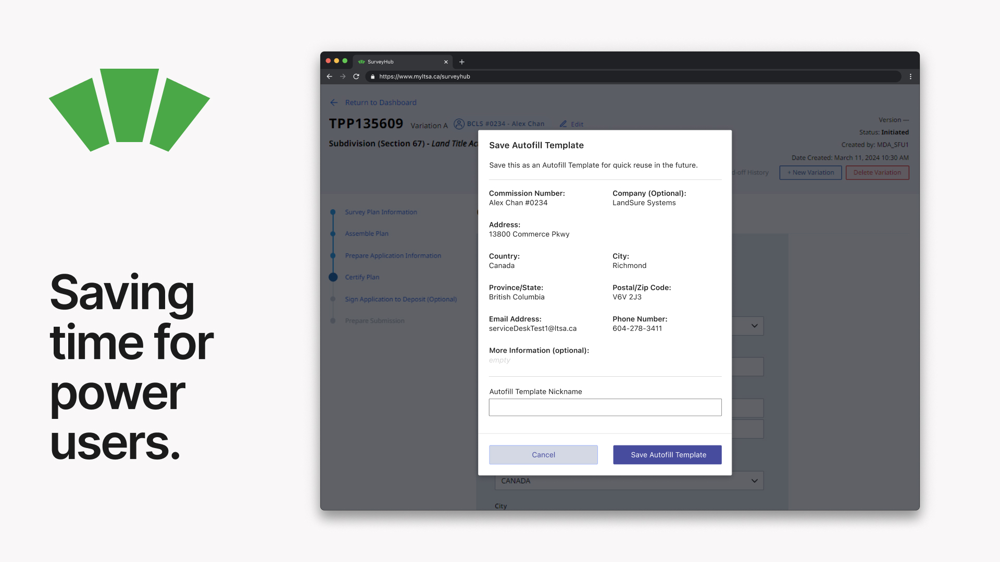
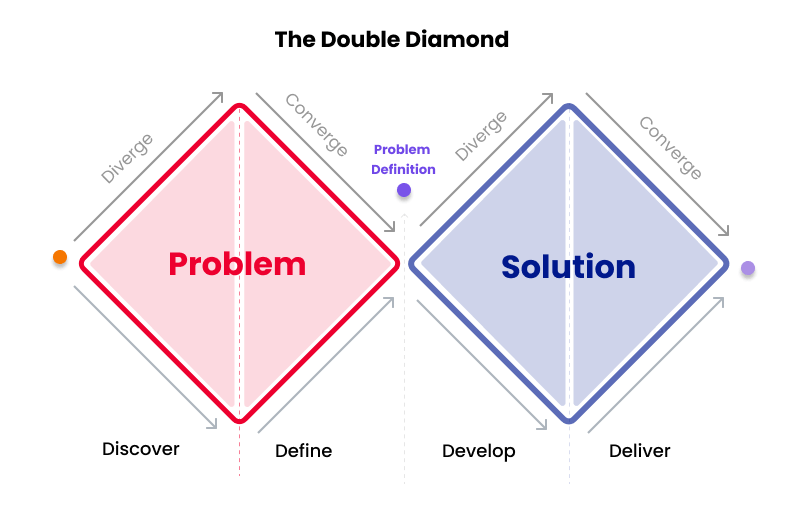

Autofill Templates feature
Autofill Templates feature
UX Designer
2 Months
Developer Specifications, Functional Prototype, Presentation
Usability testers found the feature simple and convenient to use. Early metrics from Hotjar indicate users are quick to adopt the feature and the time spent on a page with the Autofill Templates feature enabled has decreased significantly.
Autofill Templates is currently live for use on myLTSA.ca and SurveyHub.
LandSure Systems, a technology subsidiary of the Land Title and Survey Authority of BC (LTSA), develops software to facilitate land and property transactions. During my co-op at LandSure, I led the design of the Autofill Templates feature for myLTSA Enterprise, a platform used by professionals to submit digital requests to the LTSA.
Form Page on myLTSA
Frequent users of myLTSA, such as legal secretaries and land surveyors, faced a high cognitive load due to repetitive data entry. They often filled out dozens of forms daily, with similar information like property addresses, names, and account numbers. This led to typing errors, inefficiencies, and a cumbersome workflow.
In UX projects I like to use the double diamond method to guide me along the path of finding the right solution for my users, and then designing that solution right.
Double Diamond Design Process
Through user interviews and usability testing, I identified two key pain points:
Users commonly had to type in the same information across multiple forms.
The high cognitive load of manually entering repetitive data resulted in frequent typing errors, which delayed request processing and increased the need for corrective applications.
These insights confirmed the need for a solution that streamlined data entry while keeping users within their existing workflow.
To get inspiration for an optimal solution, I researched existing form/survey and document filling options. I came across eConveyancing’s data import feature for inspiration.
eConveyancing’s Data Import Feature
I ended up exploring two potential solutions:
A file saved to your account for storing data for a specific property, selecting this file prior to filling out forms will auto-populate forms you fill out for this file.
A feature allowing users to save and load blocks of form data, while in the process of filling out a form. Similar to browser autocomplete but more robust.
After presenting these options to the team, we chose Autofill Templates because it offered flexibility across different properties and forms, aligning better with user workflows.
With the solution direction decided, I focused on designing a feature that would seamlessly integrate into the existing myLTSA workflow while addressing the key pain points of repetitive data entry and errors. Here’s how I approached the design:
Early on I met with a developer. He explained that sections of a form are grouped logically to make it easier for developers to manage when coding. Since form sections were already grouped, I designed templates to align with these groupings, ensuring that saved data blocks would map cleanly to the form fields.
Since form sections were already grouped, I worked with the project manager to identify form sections that are common between forms so we could add the feature to those forms.
To ensure users stayed on the same page while creating or loading templates, I used modals. This approach minimized disruption to their workflow.
For the templates management page, I opted for a list view to make it easy for users to compare and select templates. This was especially important for users who needed to distinguish between multiple similar templates.
Manage Page
Load Modal
Midway through the project, development capacity was reduced, forcing a pivot in scope. The dedicated "Manage Autofill Templates" page was cut, and all functionality needed to be integrated directly into the form pages.
Despite the reduced scope, I focused on keeping the feature intuitive and easy to use. By integrating editing and deleting functionality directly into the load flow, users could still manage their templates efficiently without needing a separate page.
CTA's on the Form page
Keep Users Updated with System Status
Delete and Edit within Load Modal
Editing within Load Modal
I also worked to consider what I could cut from the design to because of development capacity constraints. After doing some research and chatting with more senior UX designers on my team, I decided that I would also be able to remove editing the Autofill Templates since deleting and creating a new Autofill Template could be done quickly.
During internal testing, users found the feature simple and intuitive to use. They appreciated the ability to save and load templates without leaving the form, which significantly reduced their cognitive load and frustration.
Data from Hotjar showed a decrease in time spent on form pages where the Autofill Templates feature was enabled. Users were able to complete forms faster, with fewer errors, leading to a smoother overall experience.
The feature was successfully rolled out to all myLTSA users in December 2024. It was also included in the myLTSA training webinar, where it was highlighted as a key productivity tool for frequent users.
These were made for developers in Axure with annotations specifying UI behaviours and any conditional elements.
Save Modal Dev Specs
Load Modal Dev Specs
This project was a valuable lesson in adaptability and user-centered design. Leading the Autofill Templates feature from concept to implementation taught me how to balance user needs with technical constraints, especially when faced with a mid-project scope change. By simplifying the design and focusing on core functionality, I was able to deliver a solution that addressed real pain points for users. Seeing the feature adopted and positively received was incredibly rewarding, and it reinforced the importance of designing with empathy and flexibility. This experience not only deepened my understanding of UX principles but also prepared me to tackle complex challenges in future projects.